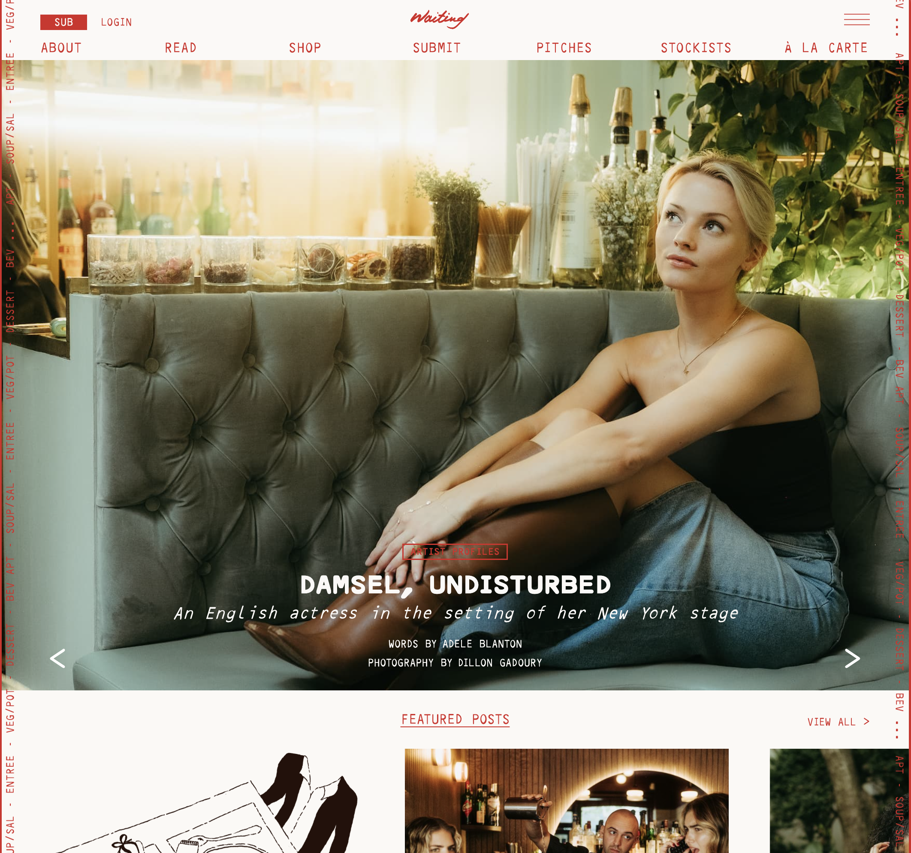
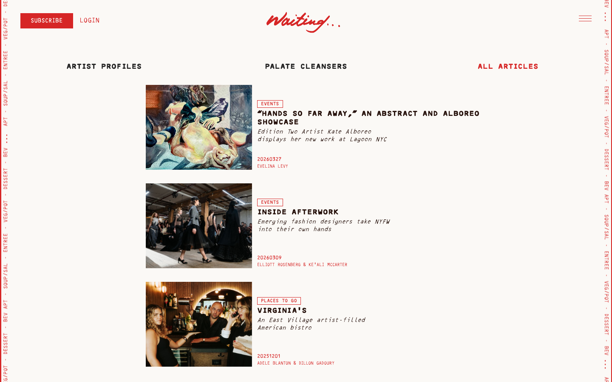
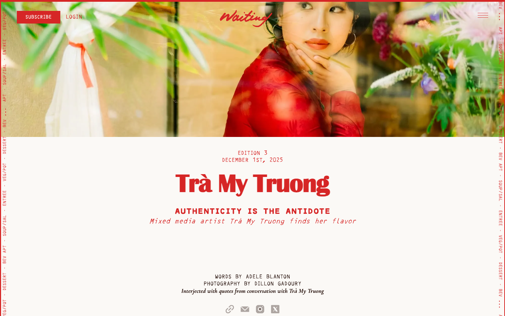
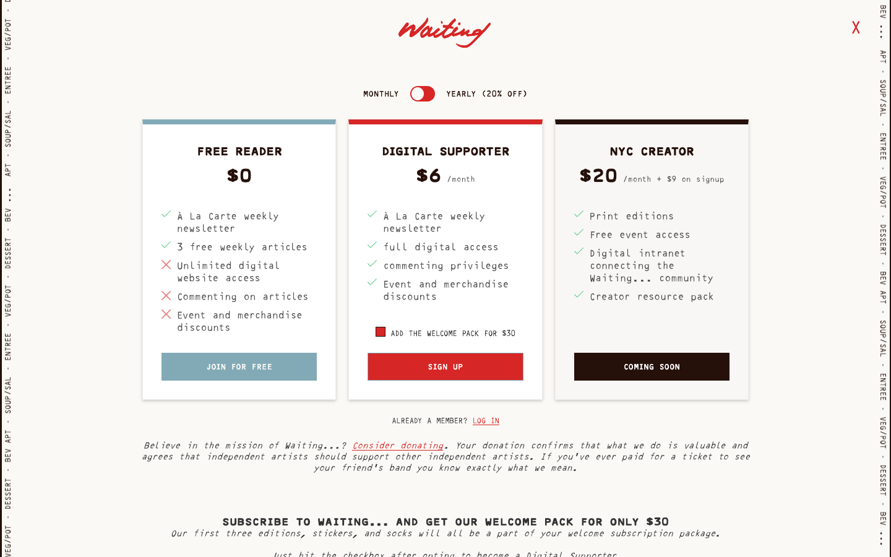
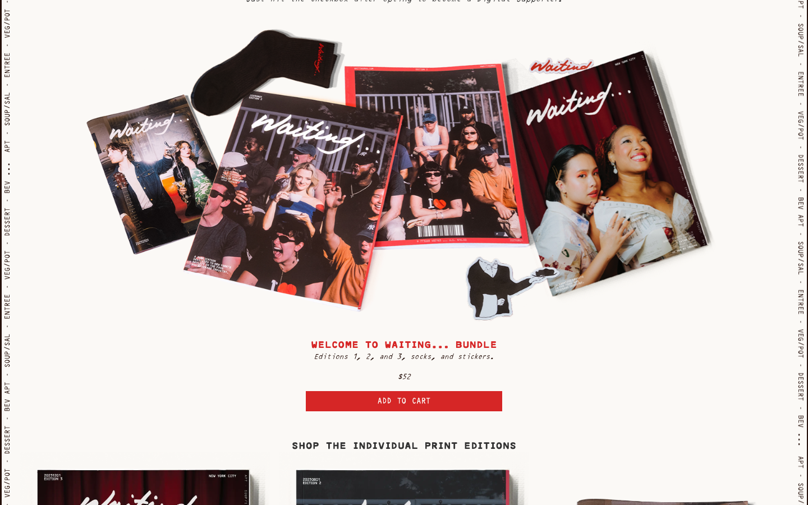
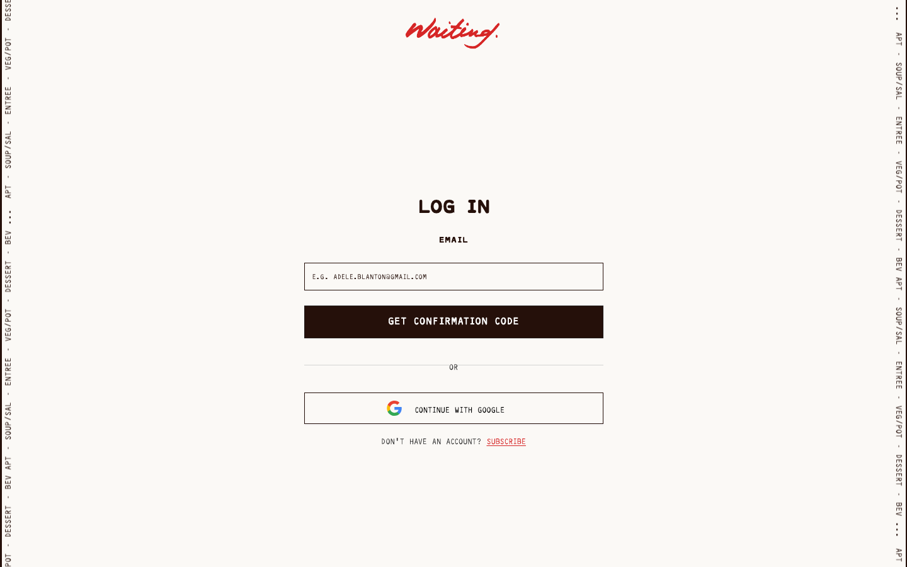
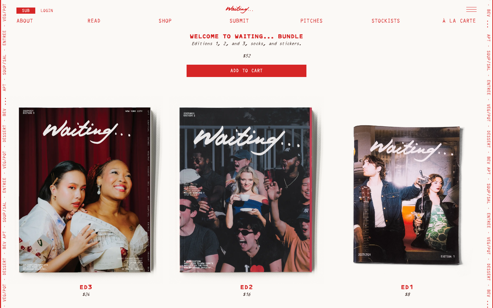
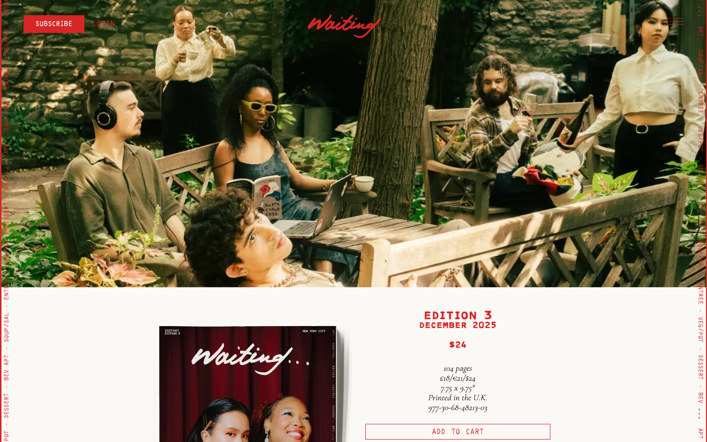
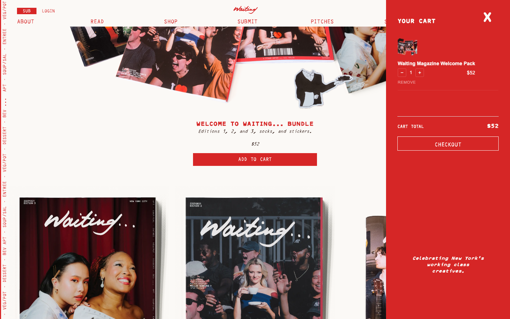

Waiting started as a print publication, but the digital question came early: how do you grow readership without giving everything away? A hard paywall kills discoverability. Fully free undermines the subscription model. We chose a metered paywall: readers get a free article budget before hitting a subscribe prompt. Articles stay indexable by search, which seeds the funnel, and the paywall converts readers who are already engaged.
"How do we grow readership without giving everything away?"
For the stack, we chose Webflow for editorial flexibility, Memberstack for membership logic, and headless Shopify for commerce. Each tool does one thing well. Feature priority for v1: reading experience, subscription access, and the shop. A submission portal and events calendar come later.
The visual language of the print edition had to translate to screen without losing its character. The type system uses Britanica Bold for titles, a custom typeface I designed for subtitles and secondary headings, and Cormorant Garamond for body text. The marquee columns flanking article headers echo a print spread, keeping peripheral content visible without interrupting reading.
The red accent marks interactive elements, active states, and section breaks. Photo cards use a hover-reveal: metadata appears when the cursor approaches, a web-native version of the flip-through you get with a physical magazine.


Single article reading view — Britanica Bold titles, Cormorant Garamond body, red accent markers
The paywall isn't a single wall. There are four reader states, each with different UI, copy, and CTA: anonymous readers within their free budget see no friction; readers at the limit see a soft gate with a subscribe prompt; subscribers get full access; lapsed accounts see a re-engagement message. Each state was designed separately.
"The prompt had to feel like an invitation, not a wall. Readers who hit the limit are our warmest leads."
Memberstack handles session state and access enforcement. The visible UX was designed in Webflow: positioning, copy, button labels, surrounding context. The goal was a gate that reads as part of the editorial voice, not a third-party widget.



Subscribe page (tier selection), welcome pack add-on, and log in
The shop sells individual print editions ($8–$24) and bundles ($52). We chose headless Shopify over Webflow Commerce because Shopify already handles inventory, tax, and fulfillment reliably. The stack is Shopify Storefront API + GraphQL on the backend, Webflow on the frontend.
The cart drawer was the core UX decision. Rather than routing to a separate checkout page, the cart slides in as an overlay. Editorial content stays visible behind it. Cart state persists in localStorage across sessions. The only moment a reader leaves the Webflow environment is the Shopify checkout handoff.



Shop listing → product page → cart drawer — purchase stays within the reading environment